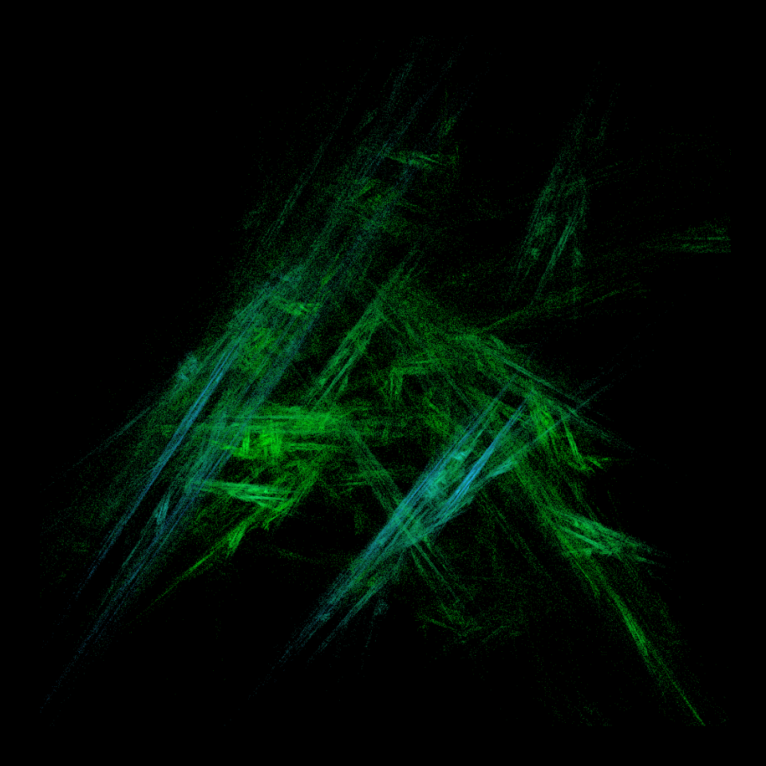
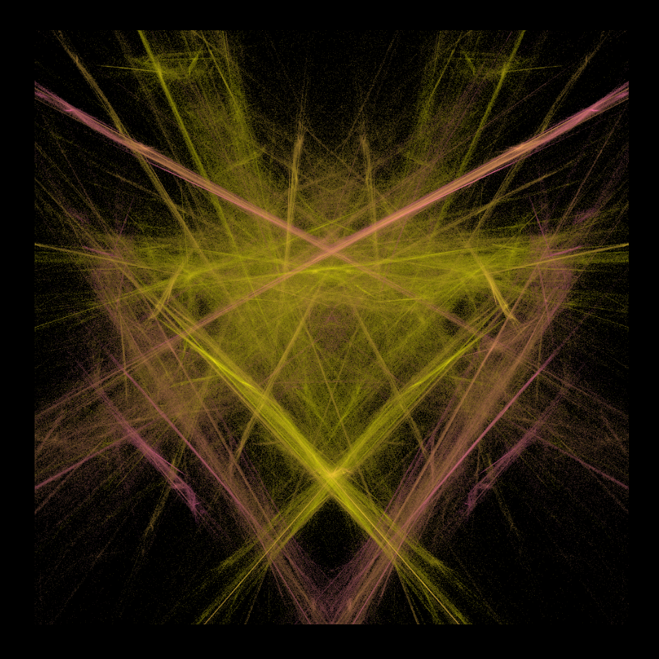
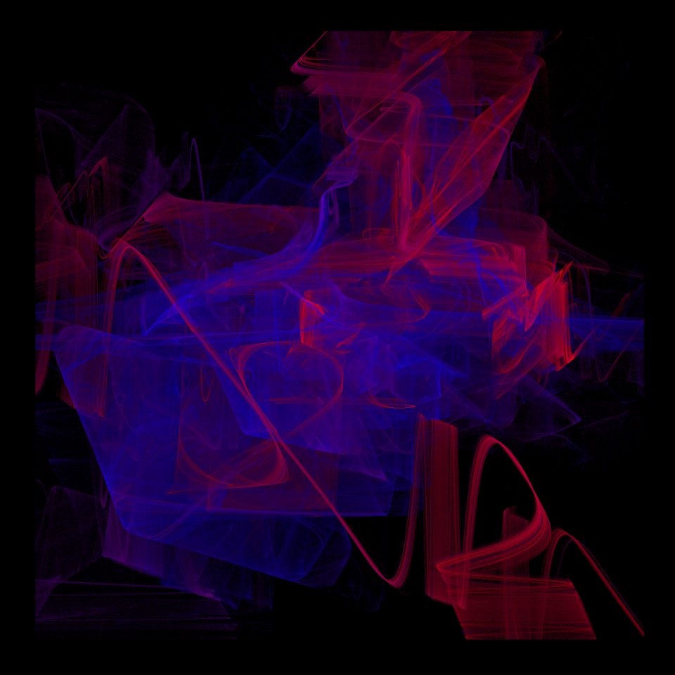
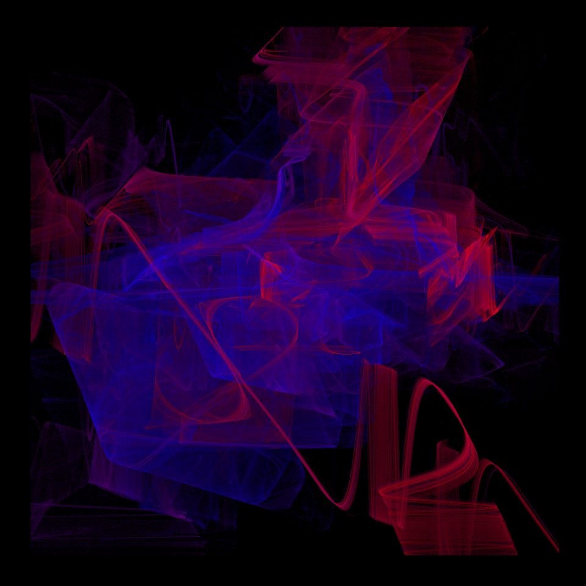

This function implements the fractal flame algorithm.
canvas_flame(
colors,
background = "#000000",
iterations = 1000000,
variations = 0,
symmetry = 0,
blend = TRUE,
weighted = FALSE,
post = FALSE,
final = FALSE,
extra = FALSE,
display = c("colored", "logdensity"),
zoom = 1,
resolution = 1000,
gamma = 1
)Arguments
- colors
a string or character vector specifying the color(s) used for the artwork.
- background
a character specifying the color used for the background.
- iterations
a positive integer specifying the number of iterations of the algorithm. Using more iterations results in images of higher quality but also increases the computation time.
- variations
an integer (vector) with a minimum of 0 and a maximum of 48 specifying the variations to be included in the flame. The default
0includes only a linear variation. Including multiple variations (e.g.,c(1, 2, 3)) increases the computation time. See the details section for more information about possible variations.- symmetry
an integer with a minimum of -6 and a maximum of 6 indicating the type of symmetry to include in the flame. The default
0includes no symmetry. Including symmetry decreases the computation time as a function of the absolutesymmetryvalue. See the details section for more information about possible symmetries.- blend
logical. Whether to blend the variations (
TRUE) or pick a unique variation in each iteration (FALSE).blend = TRUEincreases computation time as a function of the number of included variations.- weighted
logical. Whether to weigh the functions and the variations (
TRUE) or pick a function at random and equally weigh all variations (FALSE).weighted = TRUEsignificantly increases the computation time.- post
logical. Whether to apply a post transformation in each iteration.
- final
logical. Whether to apply a final transformation in each iteration.
- extra
logical. Whether to apply an additional post transformation after the final transformation. Only has an effect when
final = TRUE.- display
a character indicating how to display the flame.
colored(the default) displays colors according to which function they originate from.logdensityplots a gradient using the log density of the pixel count.- zoom
a positive value specifying the amount of zooming.
- resolution
resolution of the artwork in pixels per row/column. Increasing the resolution does not increases the computation time of this algorithm.
- gamma
a numeric value specifying the gamma correction (only used when
display = "colored"). Larger values result in brighter images and vice versa.
Value
A ggplot object containing the artwork.
Details
The variation argument can be used to include specific variations into the flame. See the appendix in the references for examples of all variations. Possible variations are:
0: Linear (default)1: Sine2: Spherical3: Swirl4: Horsehoe5: Polar6: Handkerchief7: Heart8: Disc9: Spiral10: Hyperbolic11: Diamond12: Ex13: Julia14: Bent15: Waves16: Fisheye17: Popcorn18: Exponential19: Power20: Cosine21: Rings22: Fan23: Blob24: PDJ25: Fan226: Rings227: Eyefish28: Bubble29: Cylinder30: Perspective31: Noise32: JuliaN33: JuliaScope34: Blur35: Gaussian36: RadialBlur37: Pie38: Ngon39: Curl40: Rectangles41: Arch42: Tangent43: Square44: Rays45: Blade46: Secant47: Twintrian48: Cross
The symmetry argument can be used to include symmetry into the flame. Possible options are:
0: No symmetry (default)-1: Dihedral symmetry1: Two-way rotational symmetry(-)2: (Dihedral) Three-way rotational symmetry(-)3: (Dihedral) Four-way rotational symmetry(-)4: (Dihedral) Five-way rotational symmetry(-)5: (Dihedral) Six-way rotational symmetry(-)6: (Dihedral) Snowflake symmetry
References
See also
colorPalette
Examples
# \donttest{
set.seed(3)
# Simple example, linear variation, relatively few iterations
canvas_flame(colors = c("dodgerblue", "green"), variations = 0)

# Simple example, linear variation, dihedral symmetry
canvas_flame(colors = c("hotpink", "yellow"), variations = 0, symmetry = -1, iterations = 1e7)

# Advanced example (no-blend, weighted, sine and spherical variations)
canvas_flame(
colors = colorPalette("origami"), variations = c(1, 2),
blend = FALSE, weighted = TRUE, iterations = 1e8
)
 # More iterations give much better images
set.seed(123)
canvas_flame(colors = c("red", "blue"), iterations = 1e8, variations = c(10, 17))

# }
# More iterations give much better images
set.seed(123)
canvas_flame(colors = c("red", "blue"), iterations = 1e8, variations = c(10, 17))

# }